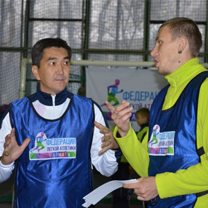
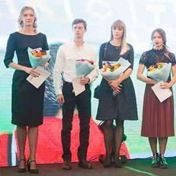
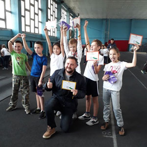
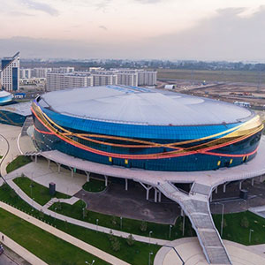
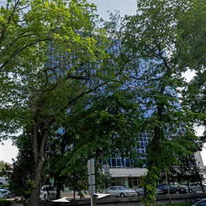

25-е Республиканские соревнования для юношей памяти Заслуженного Тренера РК О.Н. Гиржон.
Ольга Николаевна Гиржон, 11 кратная рекордсменка КазССР, 14 кратная чемпионка КазССР и именно она стояла у истоков создания Спортивной детской юношеской школы олимпийского резерва (СДЮШОР№2).
Одни из самых известных спортсменов СДЮШОР№2 это Олимпийская чемпионка Ольга Шишигина и Чемпион мира - Игорь Потапович.
В соревнованиях, которые проходят в легкоатлетическом манеже Республиканского Спортивного колледжа 15 - 16 декабря, участвуют спортсмены из разных городов Республики, в возрасте 14-17 лет, по таким спортивным дисциплинам, как спортивная ходьба, спринтерский бег, тройной прыжок, а также прыжки в высоту и с шестом.
Поддержать спортсменов и поздравить с предстоящими праздниками приехал Президент Федерации легкой атлетики г.Алматы, депутат Маслихата, Азирбаев Мухит. В процессе общения с тренерами, были обсуждены предложения по улучшению проведения Республиканских соревнований в г. Алматы, а также, главным судьёй соревнований, Ануфриевым Е.Б, были представлены предварительные результаты спортсменов.
Данный Чемпионат даст возможность выбрать лучших спортсменов и предоставит «путевку» выступать на Чемпионате Азиатских игр, которыми начинается новый сезон 2018 года.

В Алматы, 9 декабря, на манеже Центрального стадиона, состоялся третий тур отборочных соревнований по программе «Kids Athletics».
В соревнованиях приняли ученики 4 классов школ г.Алматы: №73, №95, №129, №120, №189.
Накал страстей поддерживался еще тем, что лучшие команды выходят в финал соревнований и будут бороться за первые места в финале- 19 декабря 2017 г.
Президент Федерации легкой атлетики г. Алматы, Мухит Азирбаев, поддержал мальчишек и девчонок и активно, вместе с командой – поддержки, болел за прохождение эстафет, которые являются, уже традиционно, самыми эмоциональными стартами.
Судейская коллегия состояла из профессионалов своего дела, тренеров СДЮШОР№2, которые уже не в первый раз демонстрируют свою любовь к работе с детьми. В этот раз, оценивали достижения маленьких участников, следующие тренера:
Косинов Артём Савельев Артём Дзолба Оксана Корепанов Сергей Тулапин Сергей Борисов Владимир Ерещенко Даниил Ерещенко Юлия.
И каждый раз, у судей есть незаменимые помощники - студенты Республиканского Колледжа Спорта, которые не только помогают, но еще и поддерживают спортивный дух участников соревнований.

7 декабря 2017 г. состоялась Внеочередная Конференция Федерации лёгкой атлетики Республики Казахстан
Вел конференцию глава федерации легкой атлетики страны, руководитель администрации Президента Казахстана Адильбек Джаксыбеков.
Президент Федерации лёгкой атлетики г.Алматы , Мухит Бакытович Азирбаев, представил отчет по деятельности Федерации за период май- декабрь,2017 г., а также поднял волнующие вопросы по взаимодействию с Республиканской федерацией в области развития легкой атлетики в регионах.
После официальной части Конференции, состоялось торжественное вручение премий медалистам Ашгабадских игр в помещениях,2017 г. Благодарность за высокие достижения выразили спортсменам г.Алматы: Виктории Зябкиной, Анастасии Виноградовой, Никите Филиппову, Сергею Григорьеву.

Любительские забеги на профессиональные дистанции
5 ноября, 2017 г. впервые в Казахстане состоялись любительские забеги на профессиональные дистанции: 800 м, 1500 м, 3 000м и эстафеты 4*200, а также «Шведская эстафета», которые проводились на легкоатлетическом стадионе «Алматы Арена».
В соревнованиях приняло более 130 участников, от детей в возрасте 12 лет (самый младший участник), до участников старше 60 лет.
Несмотря на прохладную температуру воздуха и густой туман, обстановка на стадионе стояла горячая.
Для разогрева участников и их болельщиков, первыми на дорожки вышли спортсмены «Специализированной Детско Юношеской Школы Олимпийского резерва №2», которые пробежали дистанции в 3000 м и 1500 м, демонстрируя свою спортивную подготовку и скорость преодоления дистанции.
Участники забегов были настолько заряжены спортивным азартом, что предполагаемая программа, которая планировалась завершиться в 16.00, задержалась еще на 2 часа, в силу подачи новых заявок на забеги.
Планируется продолжать этот проект, не реже чем 3 раза в год.
Соревнования по технологии Kids Athletics
Под руководством сертифицированного тренера IAAF, Данила Ерещенко, 36 детей из 6 школ г.Алматы собрались в крытом манеже СДЮШОР №2 для соревнований по технологии Kids Athletics.
Дети приняли участие в эстафетах, в прыжке с места и перекрестном прыжке, метании копья и «ядра», а также в эстафете с барьерами. Эмоции, как и у участников, так и у представителей школ – зашкаливали.
После соревнований, ко мне подходили как родители, так и учителя физкультуры с вопросом - а когда мы придем в их школу.

В «Алматы Арена» презентовали новый легкоатлетический стадион
Тренировки здесь собираются проводить по всем 47 дисциплинам. Бесплатно на нем будут заниматься дети из специализированных школ Олимпийского резерва, а также действующие легкоатлеты. В распоряжении королевы спорта станут 39,000 квадратных метров.
Мухит Азирбаев, президент Федерации легкой атлетики г. Алматы: - Предполагается, что здесь будут тренировки, бесплатные для детей, которые обучаются в специализированных школах ДЮШОРах. Здесь будет специальный график выстроен, и согласно этому графику, дети будут получать допуск. А также спортсмены, которые занимаются профессионально легкой атлетикой. Стадион оснащен шестью беговыми дорожками, есть ямы для прыжков в высоту и длину, зоны для метания диска и копья. Дренажная система позволит бегать и заниматься футболом вне зависимости от погодных условий. Стадион заявлен, как тренировочный и рассчитан для соревнований внутри страны.
Амин Туяков, ветеран спорта: - Как представителю легкой атлетики, открытие нового стадиона для меня очень приятно. Потому что благодаря такому стадиону будут вырастать молодые спортсмены. Самое главное, чтобы люди здесь тренировались, чтобы ближе к этому стадиону организовывали спортивные школы.
На торжественном открытии поделились еще одной новостью. Возле «Халык Арены» планируют построить крытый легкоатлетический стадион на 5000 мест. Алматы продолжит развитие такого популярного вида спорта, как легкая атлетика.

Открытие офиса ОО «Федерация легкой атлетики г.Алматы»
Свои двери открыл офис «Федерации легкой атлетики г.Алматы». Офис предназначен для встреч спортсменов и тренеров, обсуждения вопросов, касающихся развитию легкой атлетики г.Алматы.